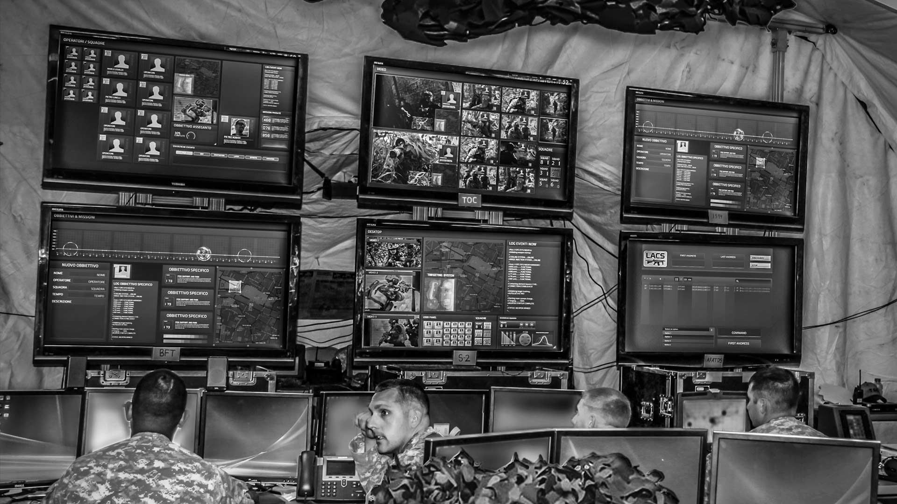

Tactical Operations Center - TOC (Centro de Operações Táticas)
Um Tactical Operations Center - TOC (Centro de Operações Táticas) é um posto de comando para operações policiais, paramilitares ou militares.
Um TOC geralmente inclui um pequeno grupo de oficiais especialmente treinados ou pessoal militar que orienta os membros de um elemento tático ativo durante uma missão.
A maioria dos centros de operações táticas permanentes é altamente técnica e contém vários sistemas de computador avançados para monitorar o progresso operacional e manter as comunicações com os operadores no campo.
Um dos TOCs mais conhecidos é o NORAD, que abriga as operações de Defesa Aeroespacial Militar da América do Norte.
Os Diretores do TOC geralmente são posicionados de uma maneira que permite a comunicação entre os membros da equipe, bem como a comunicação geral com o oficial de operações do TOC (ou comandante).
Configurações comuns incluem monitores voltados para o centro e contra os monitores de parede.
TOCs maiores têm um local onde os líderes seniores são capazes de se sentar e observar as operações das unidades subordinadas. TOCs menores e TOCs de campo podem ser criados na parte de trás de vans e caminhões, bem como em tendas e edifícios, configurando computadores e conectando equipamentos de comunicação.
